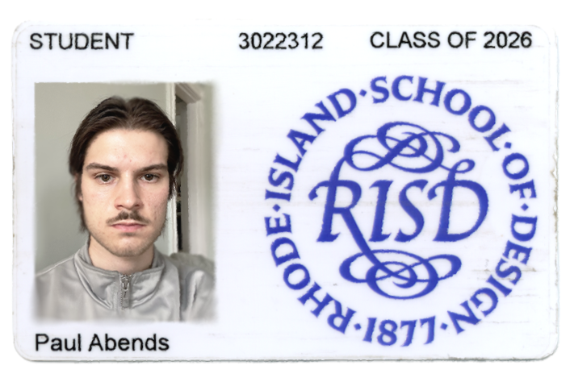
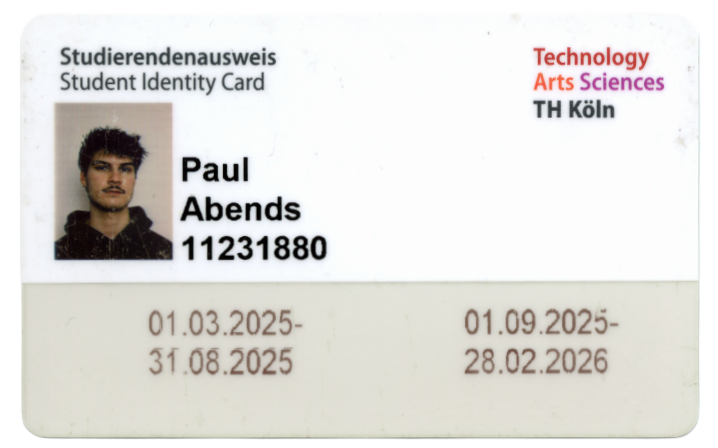
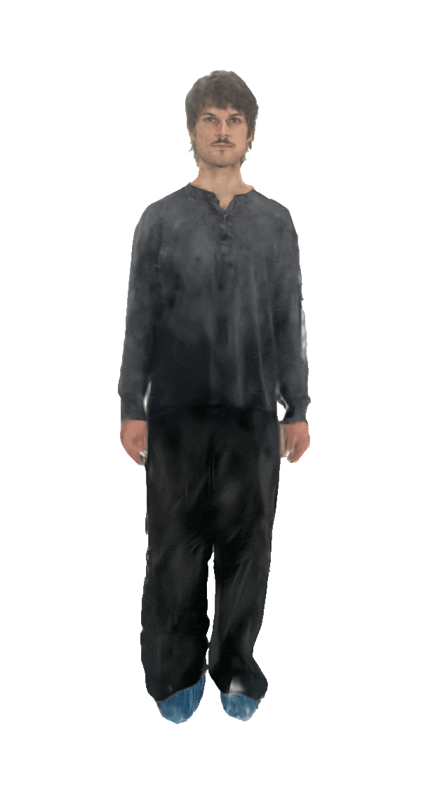

Paul Abends (23) is an integrated Designer from Cologne [cgn], Germany. He is especially interested in spatial design as a way of alternative, affective communication. While he sees experimentation in many disciplines as an integral part of his personal practice, his main body of work spans across Installation Design, Spatial Design, Graphic Design and Bio Design. Co-creating novel, innovative and sustainable solutions with nature is at the core of his self understanding as a Designer.
General Higher Education (Abitur)
@Europaschule Bornheim
// graduated 07.2022



Jewelry Design
Jewelry Design for Clients
// 10.2025 - present
[Skills] TouchDesigner, Adobe Illustrator, Adobe InDesign, Adobe Photoshop, Coding, Ableton Live, CAD, Physical Computing, Woodworking